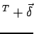
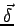

trianglelist2teleport
void Fluid::trianglelist2teleport(float target_x, float target_y, float target_z, float * trianglelist, unsigned int firsttriangleid, unsigned int lasttriangleid)
Wie bei trianglelist2boundary (5.4.2) wird auch bei trianglelist2teleport eine Grenzfläche definiert, bei deren Überschreiten eine Aktion ausgeführt wird. Die Partikel werden zu der Koordinate (target_x, target_y, target_z) ,,teleportiert``. Das heißt, sie werden an den Ort (target_x, target_y, target_z)
,,teleportiert``. Das heißt, sie werden an den Ort (target_x, target_y, target_z)

verschoben.

verhindert dabei, dass mehrere Partikel, die im gleichen Zeitschritt zum selben Ort teleportiert wurden exakt die selbe Koordinate erhalten. Generell ist aber zu beachten, daß ein Teleport evtl. viele Partikel an einen Ort zusammenführt und ist deshalb entweder mit einem SetSpeed (5.4.5) zu kombinieren, indem eine SetSpeed-Fläche an der Zielkoordinaten initialisiert wird, oder der Teleport wird durch ein Shift (5.4.4) ersetzt, welcher nicht zu Instabilitäten führt, solange im Zielgebiet kein starker Stau entsteht.
Nähere Informationen zu Kontrollpartikeln finden sich auch in Kapitel 3.2.2.
- float target_x, float target_y, float target_z
Die Koordinate, zu der die Flüssigkeit teleportiert werden soll.
- float * trianglelist
Liste von Dreieckskoordinaten wie bei trianglelist2boundary (5.4.2)
- unsigned int firsttriangleid, unsigned int lasttriangleid
Die Liste von Dreieckskoordinaten wird nur von
 bis
bis
 verwendet.
verwendet.

Leo Wandersleb
2005-01-17